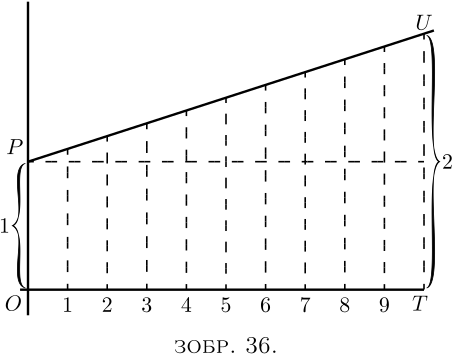
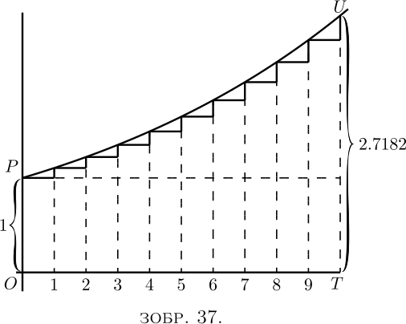
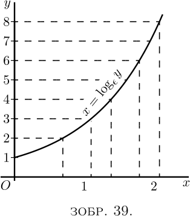
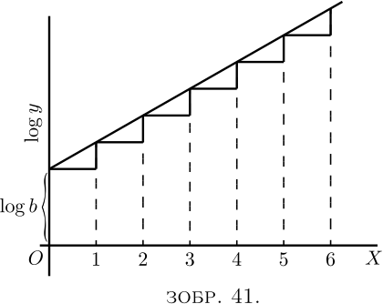

Нехай існує величина, яка зростає таким чином, що приріст її зростання протягом певного часу завжди буде пропорційним самій величині. Це нагадує процес нарахування відсотків на гроші за деякою фіксованою ставкою, адже чим більший капітал, тим більша сума відсотків на нього в певний час.
Тут ми повинні чітко розрізнити два випадки в наших розрахунках, залежно від того, як виконується обчислення - чином, який в підручниках з арифметики називають «простими відсотками», або чином, що вони називають «складними відсотками». Бо в першому випадку капітал залишається незмінним, тоді як у другому відсотки додаються до капіталу, який, таким чином, збільшується шляхом послідовних додавань.
При простих відсотках. Розглянемо конкретний випадок. Нехай початковий капітал становить £$100$, а процентна ставка становить $10$ відсотків на рік. Тоді приріст власника капіталу становитиме £$10$ щороку. Нехай він продовжує отримувати свої відсотки щороку і накопичує їх, кладучи їх у панчоху або замикаючи у своєму сейфі. Тоді, якщо він продовжить робити це протягом $10$ років, до кінця цього часу він отримає $10$ надбавок по £$10$ кожна, або £$100$, тобто разом із початковими £$100$ загальна сума становить £$200$. Його майно подвоїться за $10$ років. Якби відсоткова ставка становила $5$ процентів, йому довелося б накопичувати $20$ років, щоб подвоїти своє майно. Якби це було лише $2$ відсотки, йому довелося б накопичувати $50$ років. Легко побачити: якщо розмір річного відсотка становить $\dfrac{1}{n}$ капіталу, власник має накопичувати $n$ років, щоб подвоїти своє майно.
Або, якщо $y$ — початковий капітал, а річний відсоток складає $\dfrac{y}{n}$, то наприкінці $n$ років його власність становитиме \[ y + n\dfrac{y}{n} = 2y. \]
(2) При складних відсотках. Як і раніше, нехай господар починає з капіталу £$100$, заробляючи за ставкою $10$ відсотків на рік; але, замість того, щоб накопичувати відсотки, нехай вони додаються до капіталу щороку, щоб капітал зростав з року в рік. Тоді, наприкінці першого року, капітал зросте до £$110$; і на другий рік (ще $10$%) це принесе £$11$. На початку третього року він матиме £$121$, а відсотки на це становитимуть £$12.1$; тож він починає четвертий рік із £$133.1$, і так далі. Це легко розрахувати та виявити, що наприкінці десяти років загальний капітал зросте до £$259.37$. Насправді ми бачимо, що наприкінці кожного року кожен фунт зароблятиме $\tfrac{1}{10}$ фунта, і тому, якщо їх завжди додавати, кожен рік помножить капітал на $\tfrac{11}{10}$; і якщо це триватиме протягом десяти років (що помножить на цей коефіцієнт десять разів), це збільшить початковий капітал у $2.59374$ рази. Перекладемо це в символи. Нехай $y_0$ це початковий капітал; $\dfrac{1}{n}$ це частка, додана на кожній з $n$ операцій; і $y_n$ це обсяг капіталу в кінці $n$-ї операції. Тоді \[ y_n = y_0\left(1 + \frac{1}{n}\right)^n. \]
Але такий спосіб нарахування складних відсотків раз на рік насправді є не зовсім справедливим, адже навіть протягом першого року £$100$ повинні були зрости. Наприкінці пів року капітал мав становити принаймні £$105$, і, звичайно, було б справедливіше, якби відсотки за другу половину року були розраховані від £$105$. Це було б еквівалентно $5$% за пів року, з $20$ операціями, при кожній з яких капітал множиться на $\tfrac{21}{20}$. Якщо рахувати таким чином, до кінця десяти років капітал зріс би до £$265.32$. Для \[ (1 + \tfrac{1}{20})^{20} = 2.653. \]
Але, попри це, процес все ще не є зовсім справедливим, оскільки до кінця першого місяця вже будуть отримані певні відсотки, а піврічний розрахунок передбачає, що капітал залишається нерухомим протягом шести місяців. Припустімо, що ми розділили рік на $10$ частин і нараховуємо один відсоток за кожну десяту частину року. Тепер ми маємо $100$ операцій, що тривають протягом десяти років, або \[ y_n = £100 \left( 1 + \tfrac{1}{100} \right)^{100}, \] що становить £$270.48$.
І навіть це не кінцевим. Нехай десять років поділено на $1000$ періодів, кожен з яких становить $\frac{1}{100}$ року; відсотки становлять $\frac{1}{1000}$ за кожен такий період; тоді \[ y_n = £100 \left( 1 + \tfrac{1}{1000} \right)^{1000}, \] що становить £$271.69$.
Підемо ще дрібніше та розділимо десять років на частини по $10 000$, кожна з яких становить $\frac{1}{1000}$ року, зі ставкою $\frac{1}{100}$ від $1$ відсотка. Тоді \[ y_n = £100 \left( 1 + \tfrac{1}{10 000} \right)^{10 000}, \] що становить £$271.81$.
Зрештою, стане видно, що те, що ми намагаємося знайти, насправді є кінцевим значенням виразу $\left(1 + \dfrac{1}{n}\right)^n$, яке, як ми бачимо, є більше $2$, і яке, коли ми беремо $n$ все більше і більше, стає все ближче і ближче до певного граничного значення. Яким би великим ви не робили $n$, значення цього виразу стає все ближчим до числа \[ 2.71828\ldots \] число, що має ніколи не бути забутим.
Розгляньмо геометричні ілюстрації цих речей. На Зображенні 36, $OP$ означає початкове значення. $OT$ - це весь час, протягом якого вартість зростає. Він розділений на $10$ періодів, у кожному з яких є рівний крок угору. Тут $\dfrac{dy}{dx}$ є константою; і якщо кожен крок угору становить $\frac{1}{10}$ вихідного $OP$, то за $10$ таких кроків висота подвоюється. Якби ми зробили $20$ кроків, кожен у половину вказаної висоти, у кінці висота все одно була б подвоєна. Або $n$ таких кроків, кожен $\dfrac{1}{n}$ початкової висоти $OP$, буде достатньо, щоб подвоїти висоту. Це випадок простих відсотків. Тут $1$ зростає, поки не стане $2$.

На Зображенні 37, маємо відповідну ілюстрацію геометричної прогресії. Кожна з послідовних ординат має бути в $1 + \dfrac{1}{n}$, тобто $\dfrac{n+1}{n}$ разів вищою за попередню. Кроки вгору не рівні, тому що кожен крок угору тепер становить $\dfrac{1}{n}$ ординати в тій частині кривої. Якби у нас було $10$ кроків із коефіцієнтом множення $\left(1 + \frac{1}{10} \right)$, кінцева сума була б $(1 + \tfrac{1}{10}) ^{10}$ або $2.594$, помножене на початкову $1$. Але якщо ми зробимо $n$ достатньо великим (і відповідно $\dfrac{1}{n}$ достатньо малим), тоді остаточне значення $\left(1 + \dfrac{1}{n}\right)^ n$, до якого зросте одиниця, становитиме $2.71828$.

Епсилон. Цьому загадковому числу $2.7182818$ і т.д. математики приписали як символ грецьку літеру $\epsilon$ (вимовляється як епсилон). Усі школярі знають, що грецька буква $\pi$ (вимовляється як пі) становить $3.141592 $ і т.д., але скільки з них знають, що епсилон означає $2.71828$? Але це навіть важливіше число, ніж $\pi$!
Що ж таке епсилон?
Припустімо, ми дозволимо $1$ зростати за простими відсотками, поки він не стане $2$; тоді, якби за тієї самої номінальної процентної ставки та за той самий час ми б дозволили $1$ зростати за справжніми складними відсотками, замість простих, $1$ зросте до значення епсилон.
Деякі люди називають цей процес зростання, щомиті пропорційного до величини, логарифмічною швидкістю зростання. Одинична логарифмічна швидкість зростання — це така швидкість, яка за одиницю часу спричинить зростання $1$ до $2.718281$. Її також можна назвати органічною швидкістю зростання: оскільки для органічного росту (за певних обставин) властиво, щоб зростання організму за певний час було пропорційне величині самого організму.
Якщо ми візьмемо $100$ процентів як одиницю темпу, а будь-який фіксований період як одиницю часу, тоді результат арифметичного зростання $1$ з одиничним темпом, за одиницю часу, становитиме $2$, тоді як результат логарифмічного зростання $1$ з одиничним темпом за той самий час становитиме $2.71828\ldots$
Ще трохи про Епсилон. Ми побачили, що нам потрібно знати, якого значення досягає вираз $\left(1 + \dfrac{1}{n}\right)^n$, коли $n$ стає нескінченно великим. Нижче арифметично наведено багато значень (які будь-хто може обчислити за допомогою звичайної таблиці логарифмів), отриманих, припустивши $n = 2$; $n = 5$; $n = 10$; і так далі, до $n = 10 000 $. \begin{alignat*}{2} &(1 + \tfrac{1}{2})^2 &&= 2.25. \\ &(1 + \tfrac{1}{5})^5 &&= 2.488. \\ &(1 + \tfrac{1}{10})^{10} &&= 2.594. \\ &(1 + \tfrac{1}{20})^{20} &&= 2.653. \\ &(1 + \tfrac{1}{100})^{100} &&= 2.705. \\ &(1 + \tfrac{1}{1000})^{1000} &&= 2.7169. \\ &(1 + \tfrac{1}{10,000})^{10,000} &&= 2.7181. \end{alignat*}
Однак варто знайти інший спосіб обчислення цього надзвичайно важливого числа.
Тож, ми скористаємося біноміальною теоремою та розгорнемо вираз $\left(1 + \dfrac{1}{n}\right)^n$ у цей добре відомий спосіб.
Біноміальна теорема надає правило, що \begin{align*} (a + b)^n &= a^n + n \dfrac{a^{n-1} b}{1!} + n(n - 1) \dfrac{ a^{n-2} b^2}{2!} \\ & \phantom{= a^n\ } + n(n -1)(n - 2) \dfrac{a^{n-3} b ^3}{3!} + \text{і т.д.}. \\ \end{align*} Поклавши $a = 1$ і $b = \dfrac{1}{n}$, ми отримаємо \begin{align*} \left(1 + \dfrac{1}{n}\right)^n &= 1 + 1 + \dfrac{1}{2!} \left(\dfrac{n - 1}{n}\right) + \dfrac{1}{3!} \dfrac{(n - 1)(n - 2)}{n^2} \\ &\phantom{= 1 + 1\ } + \dfrac{1}{4!} \dfrac{(n - 1)(n - 2)( n - 3)}{n^3} + \text{і т.д.}. \end{align*}
Тепер, якщо ми припустимо, що $n$ стане нескінченно великим, скажімо, мільярдом або мільярдом мільярдів, тоді $n – 1$, $n – 2$ і $n – 3$ тощо, усі будуть відчутно рівними до $n$; і тоді ряд стає \[ \epsilon = 1 + 1 + \dfrac{1}{2!} + \dfrac{1}{3!} + \dfrac{1}{4!} + \text{і т.д.} \ldots \]
Розбираючи цей швидко збіжний ряд до будь-якої кількості членів, ми можемо отримати суму з будь-якою бажаною точністю. Ось опрацювання до десяти членів:
| $1.000000$ | |
| ділимо на 1 | $1.000000$ |
| ділимо на 2 | $0.500000$ |
| ділимо на 3 | $0.166667$ |
| ділимо на 4 | $0.041667$ |
| ділимо на 5 | $0.008333$ |
| ділимо на 6 | $0.001389$ |
| ділимо на 7 | $0.000198$ |
| ділимо на 8 | $0.000025$ |
| ділимо на 9 | $0.000002$ |
| Сума | $2.718281$ |
$\epsilon$ неспівмірне з $1$ і нагадує $\pi$ у тому, що являє собою нескінченний неперіодичний десятковий дріб.
Степеневий ряд. Нам знадобиться ще один ряд.
Давайте, знову використовуючи біноміальну теорему, розгорнемо вираз $\left(1 + \dfrac{1}{n}\right)^{nx}$, що є еквівалентним $\epsilon^x$, коли $n$ є нескінченно великим. \begin{align*} \epsilon^x &= 1^{nx} + nx \frac{1^{nx-1} \left(\dfrac{1}{n}\right)}{1!} + nx(nx - 1) \frac{1^{nx - 2} \left(\dfrac{1}{n}\right)^2}{2!} \\ & \phantom{= 1^{nx}\ } + nx(nx - 1)(nx - 2) \frac{1^{nx-3} \left(\dfrac{1}{n}\right)^3}{3!} + \text{і т.д}.\\ &= 1 + x + \frac{1}{2!} · \frac{n^2x^2 - nx}{n^2} + \frac{1}{3!} · \frac{n^3x^3 - 3n^2x^2 + 2nx}{n^3} + \text{і т.д}. \\ &= 1 + x + \frac{x^2 -\dfrac{x}{n}}{2!} + \frac{x^3 - \dfrac{3x^2}{n} + \dfrac{2x}{n^2}}{3!} + \text{і т.д}. \end{align*}
Але коли $n$ робиться нескінченно великим, це спрощується до: \[ \epsilon^x = 1 + x + \frac{x^2}{2!} + \frac{x^3}{3!} + \frac{x^4}{4!} + \text{і т.д.}\dots \]
Такий ряд називається степеневим.
Головна причина, чому $\epsilon$ вважається важливим, полягає у тому, що $\epsilon^x$ має властивість, якої не має жодна інша функція від $x$, а саме: коли ви її диференціюєте, її значення залишається незмінним; або, іншими словами, її похідна дорівнює їй самій. Це можна миттєво побачити, продиференціювавши її відносно $x$, таким чином: \begin{align*} \frac{d(\epsilon^x)}{dx} &= 0 + 1 + \frac{2x}{1 · 2} + \frac{3x^2}{1 · 2 · 3} + \frac{4x^3}{1 · 2 · 3 · 4} \\ &\phantom{= 0 + 1 + \frac{2x }{1 · 2} + \frac{3x^2}{1 · 2 · 3}\ } + \frac{5x^4}{1 · 2 · 3 · 4 · 5} + \text{і т.д}. \\ або &= 1 + x + \frac{x^2}{1 · 2} + \frac{x^3}{1 · 2 · 3} + \frac{x^4}{1 · 2 · 3 · 4} + \text{і т.д.}, \end{align*} що повністю збігається з оригінальним рядом.
Ми могли б підійти до задачі в інший спосіб і та запитати: знайдімо функцію від $x$ таку, що її похідна така сама, як і вихідна функція. Або чи існує якийсь вираз, що включає лише степені $x$, який не змінюється диференціюванням? Відповідно, припустімо як загальний вираз: \begin{align*} y &= A + Bx + Cx^2 + Dx^3 + Ex^4 + \text{і т.д}.,\\ \end{align*} (в якому коефіцієнти $A$, $B$, $C$ тощо мають бути знайдені) і диференціюємо його. \begin{align*} \dfrac{dy}{dx} &= B + 2Cx + 3Dx^2 + 4Ex^3 + \text{etc}. \end{align*}
Тепер, якщо цей новий вираз справді має бути таким самим, як той, з якого його було отримано, зрозуміло, що $A$ повинна $=B$; що $C=\dfrac{B}{2}=\dfrac{A}{1· 2}$; що $D = \dfrac{C}{3} = \dfrac{A}{1 · 2 · 3}$; що $E = \dfrac{D}{4} = \dfrac{A}{1 · 2 · 3 · 4}$ тощо.
Тим чином закон зміни полягає в тому, що \[ y = A\left(1 + \dfrac{x}{1} + \dfrac{x^2}{1 · 2} + \dfrac{x^3}{1 · 2 · 3} + \dfrac{x^4}{1 · 2 · 3 · 4} + \text{і т.д}.\right). \]
Якщо тепер ми візьмемо $A = 1$ для подальшої простоти, ми матимемо \[ y = 1 + \dfrac{x}{1} + \dfrac{x^2}{1 · 2} + \dfrac {x^3}{1 · 2 · 3} + \dfrac{x^4}{1 · 2 · 3 · 4} + \text{і т.д.}. \]
Диференціюючи його будь-яку кількість разів, ви завжди отримаєте знову той самий ряд.
Якщо тепер ми візьмемо окремий випадок $A=1$ і обчислимо ряд, ми отримаємо просто \begin{align*} \text{коли } x &= 1,\quad & y &= 2.718281 \text {і т.д.}; & \text{тобто } y &= \epsilon; \\ \text{коли } x &= 2,\quad & y &=(2.718281 \text{ і т.д.})^2; & \text{тобто } y &= \epsilon^2; \\ \text{коли } x &= 3,\quad & y &=(2.718281 \text{ і т.д.})^3; & \text{тобто } y &= \epsilon^3; \end{align*} і, отже, \[ \text{коли } x=x,\quad y=(2.718281 \text{ і т.д}.)^x;\quad\text{тобто } y=\epsilon^x , \] таким чином остаточно демонструючи, що \[ \epsilon^x = 1 + \dfrac{x}{1} + \dfrac{x^2}{1·2} + \dfrac{x^3}{1· 2· 3} + \dfrac{x^4}{1· 2· 3· 4} + \text{і т.д.} \]
Звісно, з цього випливає, що $\epsilon^y$ залишається незмінним, якщо диференціювати його по $y$. Крім того, $\epsilon^{ax}$, що еквівалентно $(\epsilon^a)^x$, при диференціюванні по $x$ буде $a\epsilon^{ax}$, оскільки $a$ є константою.
Натуральні або Неперові логарифми.
Ще одна причина, чому $\epsilon$ важливий, полягає в тому, що Непер, винахідник логарифмів, зробив $\epsilon$ базисом своєї системи. Якщо $y$ є значенням $\epsilon^x$, то $x$ є логарифмом $y$ за основою $\epsilon$. Або, якщо \begin{align*} y &= \epsilon^x, \\ \text{тоді}\; x &= \log_\epsilon y. \end{align*}
Дві криві на Зображенні 38 і Зображенні 39 представляють ці рівняння.
Розраховані точки:
Для Зоб. 38:
| $x$ | $0$ | $0.5$ | $1$ | $1.5$ | $2$ |
| $y$ | $1$ | $1.65$ | $2.71$ | $4.50$ | $7.39$ |
Для Зоб. 39:
| $y$ | $1$ | $2$ | $3$ | $4$ | $8$ |
| $x$ | $0$ | $0.69$ | $1.10$ | $1.39$ | $2.08$ |

Можна побачити, що, хоча розрахунки дають різні точки для побудови графіка, все ж результат ідентичний. Ці два рівняння насправді означають одне і те саме.
Оскільки багато людей, які використовують звичайні логарифми, що обчислюються за основою $10$ замість основи $\epsilon$, не знайомі з «натуральними» логарифмами, можливо, варто сказати про них кілька слів. Звичайне правило, згідно з яким додавання логарифмів дає логарифм добутку, залишається в силі; або \[ \log_\epsilon a + \log_\epsilon b = \log_\epsilon ab. \] Також діє правило степенів; \[ n × \log_\epsilon a = \log_\epsilon a^n. \] Але оскільки $10$ більше не є основою, неможливо помножити на $100$ або $1000$, просто додавши $2$ або $3$ до показника. Можна перейти від натурального логарифма до звичайного, просто помноживши його на $0.4343$; тобто \begin{align*} \log_{10} x &= 0.4343 × \log_{\epsilon} x, \\ \text{ і навпаки,}\; \log_{\epsilon} x &= 2.3026 × \log_{10} x. \end{align*}
(також їх називають натуральними логарифмами або гіперболічними логарифмами)
| Число | $\log_{\epsilon}$ | Число | $\log_{\epsilon}$ | |
|---|---|---|---|---|
| $1 $ | $0.0000$ | $6$ | $1.7918$ | |
| $1.1$ | $0.0953$ | $7$ | $1.9459$ | |
| $1.2$ | $0.1823$ | $8$ | $2.0794$ | |
| $1.5$ | $0.4055$ | $9$ | $2.1972$ | |
| $1.7$ | $0.5306$ | $10$ | $2.3026$ | |
| $2.0$ | $0.6931$ | $20$ | $2.9957$ | |
| $2.2$ | $0.7885$ | $50$ | $3.9120$ | |
| $2.5$ | $0.9163$ | $100$ | $4.6052$ | |
| $2.7$ | $0.9933$ | $200$ | $5.2983$ | |
| $2.8$ | $1.0296$ | $500$ | $6.2146$ | |
| $3.0$ | $1.0986$ | $1000$ | $6.9078$ | |
| $3.5$ | $1.2528$ | $2000$ | $7.6009$ | |
| $4.0$ | $1.3863$ | $5000$ | $8.5172$ | |
| $4.5$ | $1.5041$ | $10 000$ | $9.2103$ | |
| $5.0$ | $1.6094$ | $20 000$ | $9.9035$ |
Експоненціальні та логарифмічні рівняння.
Тепер спробуймо продиференціювати певні вирази, які містять логарифми або експоненти.
Візьмемо рівняння: \[ y = \log_\epsilon x. \] Спочатку перетворимо це на \[ \epsilon^y = x, \] звідки, оскільки диференціал $\epsilon^y$ відносно $y$ є вихідною функцією без змін (див. тут), \[ \frac{dx}{dy} = \epsilon^y, \] і, повертаючись від зворотної до вихідної функції, \[ \frac{dy}{dx} = \frac{1}{\ \dfrac{dx}{dy}\ } = \frac{1}{\epsilon^y} = \frac{1}{x}. \]
Це дуже цікавий результат. Це може бути записано \[ \frac{d(\log_\epsilon x)}{dx} = x^{-1}. \]
Зверніть увагу, що $x^{-1}$ — це результат, який ми ніколи не могли б отримати за правилом диференціювання степенів. Те правило складалось у помноженні на степінь і зменшенні степеня на $1$. Отже, диференціювання $x^3$ давало нам $3x^2$, а диференціювання $x^2$ давало $2x^1$. Але диференціювання $x^0$ не дасть нам $x^{-1}$, оскільки $x^0$ сама по собі дорівнює $= 1$ і є константою. Ми ще повернемося до цього цікавого факту, що диференціювання $\log_\epsilon x$ дає нам $\dfrac{1}{x}$, коли дійдемо до розділу про інтегрування.
Тепер спробуємо диференціювати \begin{align*} y &= \log_\epsilon(x+a),\\ \text{тобто}\; \epsilon^y &= x+a; \end{align*} маємо $\dfrac{d(x+a)}{dy} = \epsilon^y$, оскільки диференціал $\epsilon^y$ залишається $\epsilon^y$. Це дає \begin{align*} \frac{dx}{dy} &= \epsilon^y = x+a; \\ \end{align*} отже, повертаючись до вихідної функції, ми отримуємо \begin{align*} \frac{dy}{dx} &= \frac{1}{\;\dfrac{dx}{dy} \;} = \frac{1}{x+a}. \end{align*}
Спочатку перейдемо до натурального логарифма, помноживши на $0.4343$. Це дає нам \begin{align*} y &= 0.4343 \log_\epsilon x; \\ \text{звідки}\; \frac{dy}{dx} &= \frac{0.4343}{x}. \end{align*}
Наступна річ не настільки проста. Спробуйте це: \[ y = a^x. \]
Логарифмуючи обидві сторони, ми отримуємо \begin{align*} \log_\epsilon y &= x \log_\epsilon a, \\ \text{ або}\; x = \frac{\log_\epsilon y}{\log_\epsilon a} &= \frac{1}{\log_\epsilon a} × \log_\epsilon y. \end{align*}
Оскільки $\dfrac{1}{\log_\epsilon a}$ є константою, ми отримуємо \[ \frac{dx}{dy} = \frac{1}{\log_\epsilon a} × \frac{1} {y} = \frac{1}{a^x × \log_\epsilon a}; \] отже, інвертуючи до початкової функції. \[ \frac{dy}{dx} = \frac{1}{\;\dfrac{dx}{dy}\;} = a^x × \log_\epsilon a. \]
Ми бачимо, що, оскільки \[ \frac{dx}{dy} × \frac{dy}{dx} =1\quad\text{і}\quad \frac{dx}{dy} = \frac{1}{y} × \frac{1}{\log_\epsilon a},\quad \frac{1}{y} × \frac{dy}{dx} = \log_\epsilon a. \]
Ми знайдемо, що коли у нас є такий вираз, як $\log_\epsilon y =$ функція від $x$, ми завжди маємо $\dfrac{1}{y}\, \dfrac{dy}{dx} =$ похідна функції від $x$, тож ми можемо відразу записати з $\log_\epsilon y = x \log_\epsilon a$, \[ \frac{1}{y}\, \frac {dy}{dx} = \log_\epsilon a\quad\text{і}\quad \frac{dy}{dx} = a^x \log_\epsilon a. \]
Тепер спробуємо навести додаткові приклади.
Приклади (1) $y=\epsilon^{-ax}$. Нехай $-ax=z$; тоді $y=\epsilon^z$. \[ \frac{dy}{dz} = \epsilon^z;\quad \frac{dz}{dx} = -a;\quad\text{отже}\quad \frac{dy}{dx} = -a \epsilon^{-ax}. \]
Або так: \[ \log_\epsilon y = -ax;\quad \frac{1}{y}\, \frac{dy}{dx} = -a;\quad \frac{dy}{dx} = - ay = -a\epsilon^{-ax}. \]
(2) $y=\epsilon^{\frac{x^2}{3}}$. Нехай $\dfrac{x^2}{3}=z$; тоді $y=\epsilon^z$. \[ \frac{dy}{dz} = \epsilon^z;\quad \frac{dz}{dx} = \frac{2x}{3};\quad \frac{dy}{dx} = \frac{2x}{3}\, \epsilon^{\frac{x^2}{3}}. \]
Або так: \[ \log_\epsilon y = \frac{x^2}{3};\quad \frac{1}{y}\, \frac{dy}{dx} = \frac{2x}{3 };\quad \frac{dy}{dx} = \frac{2x}{3}\, \epsilon^{\frac{x^2}{3}}. \]
(3) $y = \epsilon^{\frac{2x}{x+1}}$. \begin{align*} \log_\epsilon y &= \frac{2x}{x+1},\quad \frac{1}{y}\, \frac{dy}{dx} = \frac{2( x+1)-2x}{(x+1)^2}; \\ отже \frac{dy}{dx} &= \frac{2}{(x+1)^2} \epsilon^{\frac{2x}{x+1}}. \end{align*}
Перевірте, написавши $\dfrac{2x}{x+1}=z$.
(4) $y=\epsilon^{\sqrt{x^2+a}}$. $\log_\epsilon y=(x^2+a)^{\frac{1}{2}}$. \[ \frac{1}{y}\, \frac{dy}{dx} = \frac{x}{(x^2+a)^{\frac{1}{2}}}\quad\text{і}\quad \frac{dy}{dx} = \frac{x × \epsilon^{\sqrt{x^2+a}}}{(x^2+a)^{\frac{1}{ 2}}}. \] А якщо $(x^2+a)^{\frac{1}{2}}=u$ і $x^2+a=v$, $u=v^{\frac{1}{2 }}$, \[ \frac{du}{dv} = \frac{1}{{2v}^{\frac{1}{2}}};\quad \frac{dv}{dx} = 2x; \quad \frac{du}{dx} = \frac{x}{(x^2+a)^{\frac{1}{2}}}. \]
Перевірте, написавши $\sqrt{x^2+a}=z$.
(5) $y=\log(a+x^3)$. Нехай $(a+x^3)=z$; тоді $y=\log_\epsilon z$. \[ \frac{dy}{dz} = \frac{1}{z};\quad \frac{dz}{dx} = 3x^2;\quad\text{отже}\quad \frac{dy}{ dx} = \frac{3x^2}{a+x^3}. \]
(6) $y=\log_\epsilon\{{3x^2+\sqrt{a+x^2}}\}$. Нехай $3x^2 + \sqrt{a+x^2}=z$; тоді $y=\log_\epsilon z$. \begin{align*} \frac{dy}{dz} &= \frac{1}{z};\quad \frac{dz}{dx} = 6x + \frac{x}{\sqrt{x^2 +a}}; \\ \frac{dy}{dx} &= \frac{6x + \dfrac{x}{\sqrt{x^2+a}}}{3x^2 + \sqrt{a+x^2}} = \frac{x(1 + 6\sqrt{x^2+a})}{(3x^2 + \sqrt{x^2+a}) \sqrt{x^2+a}}. \end{align*}
(7) $y=(x+3)^2 \sqrt{x-2}$. \begin{align*} \log_\epsilon y &= 2 \log_\epsilon(x+3)+ \tfrac{1}{2} \log_\epsilon(x-2). \\ \frac{1}{y}\, \frac{dy}{dx} &= \frac{2}{(x+3)} + \frac{1}{2(x-2)}; \\ \frac{dy}{dx} &= (x+3)^2 \sqrt{x-2} \left\{\frac{2}{x+3} + \frac{1}{2(x-2)}\right\}. \end{align*}
(8) $y=(x^2+3)^3(x^3-2)^{\frac{2}{3}}$. \begin{align*} \log_\epsilon y &= 3 \log_\epsilon(x^2+3) + \tfrac{2}{3} \log_\epsilon(x^3-2); \\ \frac{1}{y}\, \frac{dy}{dx} &= 3 \frac{2x}{(x^2+3)} + \frac{2}{3} \frac{3x^2}{x^3-2} = \frac{6x}{x^2+3} + \frac{2x^2}{x^3-2}. \end{align*} Якщо $y=\log_\epsilon(x^2+3)$, нехай $x^2+3=z$ і $u=\log_\epsilon z$. \[ \frac{du}{dz} = \frac{1}{z};\quad \frac{dz}{dx} = 2x;\quad \frac{du}{dx} = \frac{2x}{x^2+3}. \] Подібним чином, якщо $v=\log_\epsilon(x^3-2)$, $\dfrac{dv}{dx} = \dfrac{3x^2}{x^3-2}$ і \[ \frac{dy}{dx} = (x^2+3)^3(x^3-2)^{\frac{2}{3}} \left\{ \frac{6x}{x^2+3 } + \frac{2x^2}{x^3-2} \right\}. \]
(9) $y=\dfrac{\sqrt[2]{x^2+a}}{\sqrt[3]{x^3-a}}$. \begin{align*} \log_\epsilon y &= \frac{1}{2} \log_\epsilon(x^2+a) - \frac{1}{3} \log_\epsilon(x^3-a). \\ \frac{1}{y}\, \frac{dy}{dx} &= \frac{1}{2}\, \frac{2x}{x^2+a} - \frac{1}{3}\, \frac{3x^2}{x^3-a} = \frac{x}{x^2+a} - \frac{x^2}{x^3-a} \\ і \frac{dy}{dx} &= \frac{\sqrt[2]{x^2+a}}{\sqrt[3]{x^3-a}} \left\{ \frac{x}{ x^2+a} - \frac{x^2}{x^3-a} \right\}. \end{align*}
(10) $y=\dfrac{1}{\log_\epsilon x}$ \[ \frac{dy}{dx} = \frac{\log_\epsilon x × 0 - 1 × \dfrac{1}{x}} {\log_\epsilon^2 x} = -\frac{1}{x \log_\epsilon^2x}. \]
(11) $y=\sqrt[3]{\log_\epsilon x} = (\log_\epsilon x)^{\frac{1}{3}}$. Нехай $z=\log_\epsilon x$; $y=z^{\frac{1}{3}}$. \[ \frac{dy}{dz} = \frac{1}{3} z^{-\frac{2}{3}};\quad \frac{dz}{dx} = \frac{1}{x};\quad \frac{dy}{dx} = \frac{1}{3x \sqrt[3]{\log_\epsilon^2 x}}. \]
(12) $y=\left(\dfrac{1}{a^x}\right)^{ax}$. \begin{align*} \log_\epsilon y &= ax(\log_\epsilon 1 - \log_\epsilon a^x) = -ax \log_\epsilon a^x. \\ \frac{1}{y}\, \frac{dy}{dx} &= -ax × a^x \log_\epsilon a - a \log_\epsilon a^x. \\ і \frac{dy}{dx} &= -\left(\frac{1}{a^x}\right)^{ax} (x × a^{x+1} \log_\epsilon a + a \log_\epsilon a^x). \end{align*}
Тепер спробуйте виконати наступні вправи.
(1) Продиференціюйте $y=b(\epsilon^{ax} -\epsilon^{-ax})$.
(2) Знайдіть похідну виразу $u=at^2+2\log_\epsilon t$ відносно $t$.
(3) Якщо $y=n^t$, знайдіть $\dfrac{d(\log_\epsilon y)}{dt}$.
(4) Покажіть, що якщо $y=\dfrac{1}{b}·\dfrac{a^{bx}}{\log_\epsilon a}$, $\dfrac{dy}{dx}=a^{bx}$.
(5) Якщо $w=pv^n$, знайдіть $\dfrac{dw}{dv}$.
Продиференціюйте
(6) $y=\log_\epsilon x^n$.
(7) $y=3\epsilon^{-\frac{x}{x-1}}$.
(8) $y=(3x^2+1)\epsilon^{-5x}$.
(9) $y=\log_\epsilon(x^a+a)$.
(10) $y=(3x^2-1)(\sqrt{x}+1)$.
(11) $y=\dfrac{\log_\epsilon(x+3)}{x+3}$.
(12) $y=a^x × x^a$.
(13) Лорд Кельвін показав, що швидкість передачі сигналу через підводний кабель залежить від величини відношення зовнішнього діаметра сердечника до діаметра мідного дроту, що входить до нього. Якщо це співвідношення називається $y$, то кількість сигналів $s$, які можна надіслати за хвилину, можна виразити формулою \[ s=ay^2 \log_\epsilon \frac{1}{y}; \] де $a$ — константа, яка залежить від довжини та якості матеріалів. Покажіть, що якщо вони задані, $s$ буде максимальним, якщо $y=1 ÷ \sqrt{\epsilon}$.
(14) Знайдіть максимум або мінімум \[ y=x^3-\log_\epsilon x. \]
(15) Продиференціюйте $y=\log_\epsilon(ax\epsilon^x)$.
(16) Продиференціюйте $y=(\log_\epsilon ax)^3$.
(1) $ab(\epsilon^{ax} + \epsilon^{-ax})$.
(2) $2at + \dfrac{2}{t}$.
(3) $\log_\epsilon n$.
(5) $npv^{n-1}$.
(6) $\dfrac{n}{x}$.
(7) $\dfrac{3\epsilon^{- \frac{x}{x-1}}}{(x - 1)^2}$.
(8) $6x \epsilon^{-5x} - 5(3x^2 + 1)\epsilon^{-5x}$.
(9) $\dfrac{ax^{a-1}}{x^a + a}$.
(10) $\left(\dfrac{6x}{3x^2-1} + \dfrac{1}{2\left(\sqrt x + x\right)}\right) \left(3x^2-1\right)\left(\sqrt x + 1\right)$.
(11) $\dfrac{1 - \log_\epsilon \left(x + 3\right)}{\left(x + 3\right)^2}$.
(12) $a^x\left(ax^{a-1} + x^a \log_\epsilon a\right)$.
(14) Мін.: $y = 0.7$ для $x = 0.694$.
(15) $\dfrac{1 + x}{x}$.
(16) $\dfrac{3}{x} (\log_\epsilon ax)^2$.
Повернімося до кривої, яка має свої послідовні ординати в геометричній прогресії, як-от представлена рівнянням $y=bp^x$.
Ми можемо побачити, поклавши $x=0$, що $b$ є початковою висотою $y$.
Тоді, коли \[ x=1,\quad y=bp;\qquad x=2,\quad y=bp^2;\qquad x=3,\quad y=bp^3,\quad \text{і т.д.} \]
Крім того, ми бачимо, що $p$ — це числове значення відношення між висотою будь-якої ординати та висотою наступної після неї. На Зображенні 40, ми взяли $p$ як $\frac{6}{5}$; кожна ордината має висоту $\frac{6}{5}$, від і попередньої.

Якщо дві послідовні ординати завжди співвіднесені між собою таким чином, їхні логарифми матимуть постійну різницю; так що, якщо ми повинні побудувати нову криву, Зображення 41, зі значеннями $\log_\epsilon y$ по ординатах, це буде пряма лінія з рівним нахилом вгору. Фактично, з рівняння випливає, що \begin{align*} \log_\epsilon y &= \log_\epsilon b + x · \log_\epsilon p, \\ \text{звідки }\; \log_\epsilon y &- \log_\epsilon b = x · \log_\epsilon p. \end{align*}
Оскільки $\log_\epsilon p$ є просто числом і може бути записане як $\log_\epsilon p=a$, з цього випливає, що \[ \log_\epsilon \frac{y}{b}=ax, \] і рівняння набуває вигляду \[ y = b\epsilon^{ax}. \]